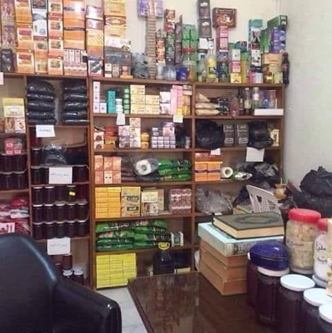

الحكيم الروحاني الاستاذ حبيب بن يوسف حكيم روحاني بالحجة والبرهان ويعالج بالرقية الشرعية
يعالج عديد الحالات المستعصية منهم السرطان في مراحله الاولى والوسطى - العجز والضعف الجنسي والبوصفير يعالج الصم والبكم - الشقيقة - العذر والجلطة والغصة - البرص - فقر الدم - تساقط الشعر - مرض السكري - الريشة - عرق الاسى - الروماتيزم - حب الشباب - الامراض النفسية والعصبية - كما يزيل اعتى انواع السحر ويزيل التابعة في ليلتها ويفك المربوط ويسهل مكتوب الفتيات والصلح والوئام بين الزوجين.
Email:
samirboukli28@gmail.com
Téléphone:
+216-98 254 133
+216-20 400 370
+216-94 364 456
Adresse:
قبالة صيدلية الليل بالدندان تونس
#الحكيم_الروحاني_الاستاذ_حبيب_بن_يوسف_ الي كافة الزائرين نعلمكم ان للاستاذ حبيب بن يوسف مكتب واحد لا غير ومقره الدندان تونس العاصمة قبالة صيدلية الليل والتيجاري بنك الدندان يومي الخميس والجمعة راحة باقي ايام العمل من السبت الي يوم الأربعاء من الساعة (8:30)صباحا الي(13)الواحدة بعد الزوال فقط للاتصال بالاستاذ حبيب بن يوسف: 98254133 20400370☎️94364456 او على رقم الهاتف 70605791 ☎️ ◀️الحكيم الروحاني ▶️ الاستاذ حبيب بن يوسف يعالج #بالقران_والرقية_الشرعية #العسل_والحبة_السوداء_لا_يستعين_بجان وهوا #اشهر #حكيم_روحاني_في_تونس #الوطن_العربي يعرف لكم ماهي التابعة أو الجان العاشق التي يزيلها في أربعة وعشرون ساعة هي جان مارد من اعتي انواع الجان علامات عند المصاب بالتابعة أو القرينة أو الجان العاشق الاعراض: اوجاع الرأس.الضيق علي مستوى الصدر وقلة النوم.تشتت الأفكار والاضطراب النفسي والاكتئاب والعصبية الاحتلام الجنسي والكوابيس عند النوم فراغ الجيب وقلة القبول والتسهيل في الزواج و المال والاعمال والسفر التعطيل في الإنجاب قلة البخت (قلة الزهر) وتنكر الأقارب والأصدقاء له مهما فعل من خير للاتصال بالاستاذ حبيب بن يوسف: 98254133☎️ ☎️94364456 او على رقم الهاتف 70605791 ☎️20400370 ◀️حكيم روحاني بالحجة و البرهان▶️ ⛔الناس الكل تتسائل شكون الي عالج فاطمة الي انجبت 10 صغار وماتولها الكل وعملتلهم جبانة و تعاطف معاها التوانسة وحكايتها تعدات في الحوار التونسي وقناة الجزيرة من بعد ربي رزقها ب 3 صغار عايشين ✅فاطمة تعالجت لدى الحكيم الروحاني بالدندان الاستاذ حبيب بن يوسف↔️ يعالج عديد الحالات المستعصية منهم السرطان في مراحله الاولى والوسطى - العجز والضعف الجنسي والبوصفير يعالج الصم والبكم - الشقيقة - العذر والجلطة والغصة - البرص - فقر الدم - تساقط الشعر - مرض السكري - الريشة - عرق الاسى - الروماتيزم - حب الشباب - الامراض النفسية والعصبية - كما يزيل اعتى انواع السحر ويزيل التابعة في ليلتها ويفك المربوط ويسهل مكتوب الفتيات والصلح والوئام بين الزوجين. يومي الخميس والجمعة راحة وبقية الايام من الساعة(8:30) الثامنة و النصف صباحا الي(13) الواحدة بعد الزوال

#الحكيم_الروحاني_الاستاذ_حبيب_بن_يوسف_ الي كافة الزائرين نعلمكم ان للاستاذ حبيب بن يوسف مكتب واحد لا غير ومقره الدندان تونس العاصمة قبالة صيدلية الليل والتيجاري بنك الدندان يومي الخميس والجمعة راحة باقي ايام العمل من السبت الي يوم الأربعاء من الساعة (8:30)صباحا الي(13)الواحدة بعد الزوال فقط للاتصال بالاستاذ حبيب بن يوسف: 98254133 20400370☎️94364456 او على رقم الهاتف 70605791 ☎️ ◀️الحكيم الروحاني ▶️ الاستاذ حبيب بن يوسف يعالج #بالقران_والرقية_الشرعية #العسل_والحبة_السوداء_لا_يستعين_بجان وهوا #اشهر #حكيم_روحاني_في_تونس #الوطن_العربي يعرف لكم ماهي التابعة أو الجان العاشق التي يزيلها في أربعة وعشرون ساعة هي جان مارد من اعتي انواع الجان علامات عند المصاب بالتابعة أو القرينة أو الجان العاشق الاعراض: اوجاع الرأس.الضيق علي مستوى الصدر وقلة النوم.تشتت الأفكار والاضطراب النفسي والاكتئاب والعصبية الاحتلام الجنسي والكوابيس عند النوم فراغ الجيب وقلة القبول والتسهيل في الزواج و المال والاعمال والسفر التعطيل في الإنجاب قلة البخت (قلة الزهر) وتنكر الأقارب والأصدقاء له مهما فعل من خير للاتصال بالاستاذ حبيب بن يوسف: 98254133☎️ ☎️94364456 او على رقم الهاتف 70605791 ☎️20400370 ◀️حكيم روحاني بالحجة و البرهان▶️ ⛔الناس الكل تتسائل شكون الي عالج فاطمة الي انجبت 10 صغار وماتولها الكل وعملتلهم جبانة و تعاطف معاها التوانسة وحكايتها تعدات في الحوار التونسي وقناة الجزيرة من بعد ربي رزقها ب 3 صغار عايشين ✅فاطمة تعالجت لدى الحكيم الروحاني بالدندان الاستاذ حبيب بن يوسف↔️ يعالج عديد الحالات المستعصية منهم السرطان في مراحله الاولى والوسطى - العجز والضعف الجنسي والبوصفير يعالج الصم والبكم - الشقيقة - العذر والجلطة والغصة - البرص - فقر الدم - تساقط الشعر - مرض السكري - الريشة - عرق الاسى - الروماتيزم - حب الشباب - الامراض النفسية والعصبية - كما يزيل اعتى انواع السحر ويزيل التابعة في ليلتها ويفك المربوط ويسهل مكتوب الفتيات والصلح والوئام بين الزوجين. يومي الخميس والجمعة راحة وبقية الايام من الساعة(8:30) الثامنة و النصف صباحا الي(13) الواحدة بعد الزوال
#الحكيم_الروحاني_الاستاذ_حبيب_بن_يوسف_ الي كافة الزائرين نعلمكم ان للاستاذ حبيب بن يوسف مكتب واحد لا غير ومقره الدندان تونس العاصمة قبالة صيدلية الليل والتيجاري بنك الدندان يومي الخميس والجمعة راحة باقي ايام العمل من السبت الي يوم الأربعاء من الساعة (8:30)صباحا الي(13)الواحدة بعد الزوال فقط للاتصال بالاستاذ حبيب بن يوسف: 98254133 20400370☎️94364456 او على رقم الهاتف 70605791 ☎️ ◀️الحكيم الروحاني ▶️ الاستاذ حبيب بن يوسف يعالج #بالقران_والرقية_الشرعية #العسل_والحبة_السوداء_لا_يستعين_بجان وهوا #اشهر #حكيم_روحاني_في_تونس #الوطن_العربي يعرف لكم ماهي التابعة أو الجان العاشق التي يزيلها في أربعة وعشرون ساعة هي جان مارد من اعتي انواع الجان علامات عند المصاب بالتابعة أو القرينة أو الجان العاشق الاعراض: اوجاع الرأس.الضيق علي مستوى الصدر وقلة النوم.تشتت الأفكار والاضطراب النفسي والاكتئاب والعصبية الاحتلام الجنسي والكوابيس عند النوم فراغ الجيب وقلة القبول والتسهيل في الزواج و المال والاعمال والسفر التعطيل في الإنجاب قلة البخت (قلة الزهر) وتنكر الأقارب والأصدقاء له مهما فعل من خير للاتصال بالاستاذ حبيب بن يوسف: 98254133☎️ ☎️94364456 او على رقم الهاتف 70605791 ☎️20400370 ◀️حكيم روحاني بالحجة و البرهان▶️ ⛔الناس الكل تتسائل شكون الي عالج فاطمة الي انجبت 10 صغار وماتولها الكل وعملتلهم جبانة و تعاطف معاها التوانسة وحكايتها تعدات في الحوار التونسي وقناة الجزيرة من بعد ربي رزقها ب 3 صغار عايشين ✅فاطمة تعالجت لدى الحكيم الروحاني بالدندان الاستاذ حبيب بن يوسف↔️ يعالج عديد الحالات المستعصية منهم السرطان في مراحله الاولى والوسطى - العجز والضعف الجنسي والبوصفير يعالج الصم والبكم - الشقيقة - العذر والجلطة والغصة - البرص - فقر الدم - تساقط الشعر - مرض السكري - الريشة - عرق الاسى - الروماتيزم - حب الشباب - الامراض النفسية والعصبية - كما يزيل اعتى انواع السحر ويزيل التابعة في ليلتها ويفك المربوط ويسهل مكتوب الفتيات والصلح والوئام بين الزوجين. يومي الخميس والجمعة راحة وبقية الايام من الساعة(8:30) الثامنة و النصف صباحا الي(13) الواحدة بعد الزوال

#الحكيم_الروحاني_الاستاذ_حبيب_بن_يوسف_ الي كافة الزائرين نعلمكم ان للاستاذ حبيب بن يوسف مكتب واحد لا غير ومقره الدندان تونس العاصمة قبالة صيدلية الليل والتيجاري بنك الدندان يومي الخميس والجمعة راحة باقي ايام العمل من السبت الي يوم الأربعاء من الساعة (8:30)صباحا الي(13)الواحدة بعد الزوال فقط للاتصال بالاستاذ حبيب بن يوسف: 98254133 20400370☎️94364456 او على رقم الهاتف 70605791 ☎️ ◀️الحكيم الروحاني ▶️ الاستاذ حبيب بن يوسف يعالج #بالقران_والرقية_الشرعية #العسل_والحبة_السوداء_لا_يستعين_بجان وهوا #اشهر #حكيم_روحاني_في_تونس #الوطن_العربي يعرف لكم ماهي التابعة أو الجان العاشق التي يزيلها في أربعة وعشرون ساعة هي جان مارد من اعتي انواع الجان علامات عند المصاب بالتابعة أو القرينة أو الجان العاشق الاعراض: اوجاع الرأس.الضيق علي مستوى الصدر وقلة النوم.تشتت الأفكار والاضطراب النفسي والاكتئاب والعصبية الاحتلام الجنسي والكوابيس عند النوم فراغ الجيب وقلة القبول والتسهيل في الزواج و المال والاعمال والسفر التعطيل في الإنجاب قلة البخت (قلة الزهر) وتنكر الأقارب والأصدقاء له مهما فعل من خير للاتصال بالاستاذ حبيب بن يوسف: 98254133☎️ ☎️94364456 او على رقم الهاتف 70605791 ☎️20400370 ◀️حكيم روحاني بالحجة و البرهان▶️ ⛔الناس الكل تتسائل شكون الي عالج فاطمة الي انجبت 10 صغار وماتولها الكل وعملتلهم جبانة و تعاطف معاها التوانسة وحكايتها تعدات في الحوار التونسي وقناة الجزيرة من بعد ربي رزقها ب 3 صغار عايشين ✅فاطمة تعالجت لدى الحكيم الروحاني بالدندان الاستاذ حبيب بن يوسف↔️ يعالج عديد الحالات المستعصية منهم السرطان في مراحله الاولى والوسطى - العجز والضعف الجنسي والبوصفير يعالج الصم والبكم - الشقيقة - العذر والجلطة والغصة - البرص - فقر الدم - تساقط الشعر - مرض السكري - الريشة - عرق الاسى - الروماتيزم - حب الشباب - الامراض النفسية والعصبية - كما يزيل اعتى انواع السحر ويزيل التابعة في ليلتها ويفك المربوط ويسهل مكتوب الفتيات والصلح والوئام بين الزوجين. يومي الخميس والجمعة راحة وبقية الايام من الساعة(8:30) الثامنة و النصف صباحا الي(13) الواحدة بعد الزوال